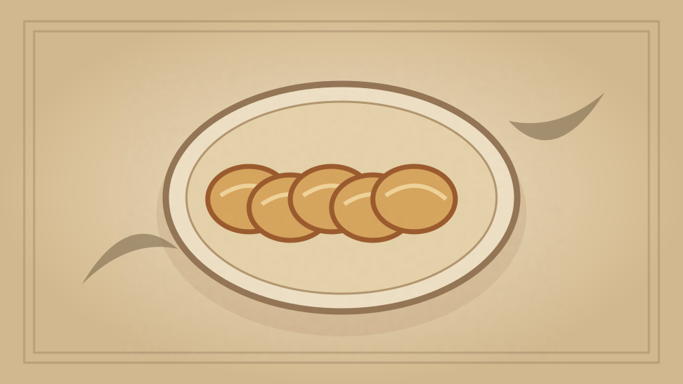

1910 · Fannie Merritt Farmer · BREAD AND BREAD MAKING
Parker House Rolls
The Boston Cooking-School Cook Book

Historical Recipe
The following text is extracted from the 1910 edition, retaining historical terminology and quantities.
Original Ingredients & Directions
2 cups scalded milk
3 tablespoons butter
2 tablespoons sugar
1 teaspoon salt
1 yeast cake dissolved in
¼ cup lukewarm water
Flour
Add butter, sugar, and salt to milk; when lukewarm, add dissolved yeast cake and three cups of flour. Beat thoroughly, cover, and let rise until light; cut down, and add enough flour to knead (it will take about two and one-half cups). Let rise again, toss on slightly floured board, knead, pat, and roll out to one-third inch thickness. Shape with biscuit-cutter, first dipped in flour. Dip the handle of a case knife in flour, and with it make a crease through the middle of each piece; brush over one-half of each piece with melted butter, fold, and press edges together. Place in greased pan, one inch apart, cover, let rise, and bake in hot oven twelve to fifteen minutes. As rolls rise they will part slightly, and if hastened in rising are apt to lose their shape.
Sweet French Rolls. —Page 60 .
Parker House Rolls; Salad Rolls; Clover Leaf Biscuit; Sticks. — Page 59 .
Swedish Tea Ring; Swedish Tea Braid. — Page 64 .
Coffee Cakes (Brioche). — Page 62 .
59 Parker House Rolls may be shaped by cutting or tearing off small pieces of dough, and shaping round like a biscuit; place in rows on floured board, cover, and let rise fifteen minutes. With handle of large wooden spoon, or toy rolling-pin, roll through centre of each biscuit, brush edge of lower halves with melted butter, fold, press lightly, place in buttered pan one inch apart, cover, let rise, and bake.
Automatically extracted transcription; editorial verification pending. Historical instructions may not meet modern food-safety standards.